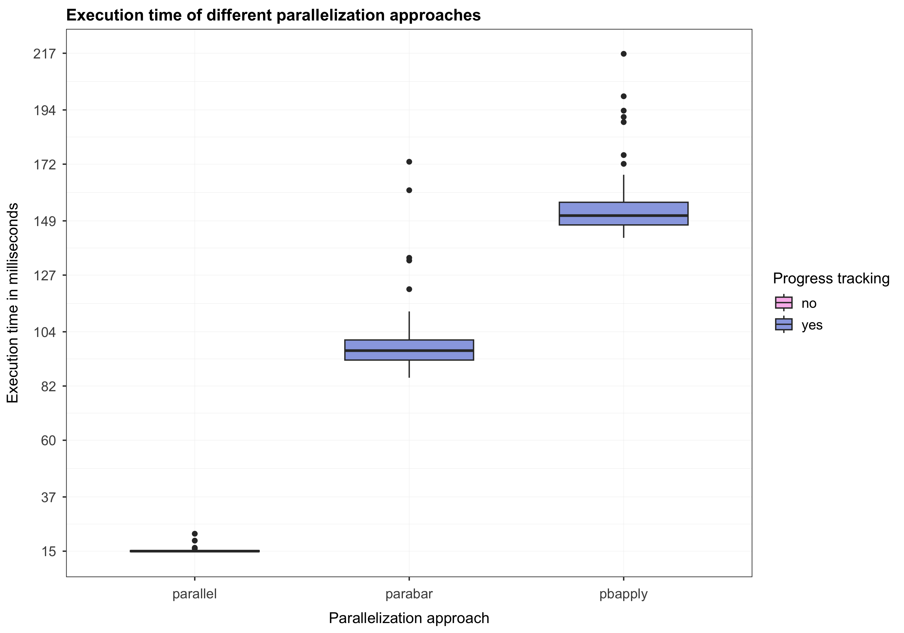

Introduction
The goal of this article is to compare the parabar
package with other packages available on CRAN that provide
progress tracking functionality for parallelized
R code. While parabar provides more features,
the comparisons and benchmarks presented in this article are
specifically aimed at its progress-tracking functionality. The remainder
of this article is organized as follows. I start with a section on how
parabar tackles progress tracking. Then, I iterate over
other packages that provide progress tracking for parallel tasks and
briefly discuss the approaches these packages employ. Next, I provide
rough benchmarks comparing the added overhead of these
progress-tracking approaches to the baseline scenario of using the
built-in package parallel
(i.e., without progress tracking).
Progress tracking with parabar
The parabar package is aimed at two audiences: (1)
end-users who intend to use our package in scripts executed in an
interactive R session (i.e., see this resource),
and (2) R package developers (i.e., see this
resource). The two key concepts behind
parabar are backends
and contexts.
Below I describe these concepts in more detail and demonstrate how they
can be used to add new functionality to parabar. This
example is focused on progress tracking, and it represents but one
example of what is possible. You may check out the UML
diagram for a more detailed overview of the package design.
{kind=link}
Backends
A backend
is an R6 class wrapper
around a cluster object obtained from the
?parallel::makeCluster function. The role of a backend is
to abide by a standardized way of interacting with parallel
clusters by implementing the ?Service interface. In a
nutshell, the ?Service interface defines the set of
operations that a backend can perform on a cluster object (e.g.,
exporting variables, evaluating expressions, running parallel tasks
etc.). Backends can be of different types. Currently,
parabar supports synchronous and
asynchronous backends. A synchronous
backend manages a cluster created in the same process as the backend
instance itself. An asynchronous
backend, on the other hand, manages a cluster created in a
background R session (i.e., created via the callr package). In
principle, it is possible to extend parabar with other
types of backends (e.g., backends that are created on a remote server
and managed over SSH).
Contexts
The parabar package is designed with extensibility in
mind, which brings us to the second key concept, namely,
contexts. New functionality can be implemented as
custom contexts that extend the base context class. In
simple terms, a context is an R6 wrapper class for
a backend instance, with the role of determining how the backend
operations defined by the ?Service interface should be
executed. The base ?Context (i.e., that all other custom
contexts extend) implements the same ?Service as the
backend instance and simply forwards its method calls to the backend
instance, which in turn interacts with the cluster. For example, calling
the sapply method on a base ?Context instance
will forward the call to the corresponding sapply method on
the wrapped ?Backend instance, which contains the actual
implementation details for interacting with the cluster object (e.g.,
via ?parallel::parSapply).
Progress tracking functionality
New functionality can be added by creating custom contexts that
extends the base context. Custom contexts can then override and decorate
the methods of the base context to provide the desired functionality.
The ?ProgressTrackingContext is an example of such a custom
context that decorates the sapply method to add progress
tracking. This specific context works by overriding the
sapply method of the base ?Context class to
add the necessary functionality for progress tracking. More
specifically, if we take a look at the source
code for the sapply method of the base
?Context we see the following:
# ...
sapply = function(x, fun, ...) {
# Consume the backend API.
private$.backend$sapply(x = x, fun = fun, ...)
}
# ...This method simply passes its arguments to the sapply
method of the wrapped backend instance (i.e., stored in the private
field .backend). Note that the ?Backend and
the ?Context classes share a sapply method
since both implement the ?Service interface that requires
them to provide an implementation for such a method. The custom
?ProgressTrackingContext can override the sapply
method above to provide progress-tracking capabilities as
follows:
# ...
sapply = function(x, fun, ...) {
# Create file for logging progress.
log <- private$.make_log()
# Clear the temporary file on function exit.
on.exit(unlink(log))
# Decorate task function.
task <- private$.decorate(task = fun, log = log)
# Execute the decorated task.
super$sapply(x = x, fun = task, ...)
# Show the progress bar and block the main process.
private$.show_progress(total = length(x), log = log)
}
# ...Breaking down the implementation above, the following lines of code
# Create file for logging progress.
log <- private$.make_log()
# Clear the temporary file on function exit.
on.exit(unlink(log))create
a temporary file where the task function will record
the progress after each task execution, and remove this file when the
parallel task has completed. The next line of code
# Decorate task function.
task <- private$.decorate(task = fun, log = log)decorates
the task function by injecting code that enables it to
record the progress in the log file after each execution.
Next, we call the sapply method of the base
?Context class (i.e., via the super access
modifier) and pass it the decorated task
function.
# Execute the decorated task.
super$sapply(x = x, fun = task, ...)As mentioned earlier, this call is simply forwarded to the
sapply method of the .backend instance.
However, unlike before, the task function is now decorated
to log the progress to a file. Finally, the following line of code
# Show the progress bar and block the main process.
private$.show_progress(total = length(x), log = log)simply creates a ?Bar instance to display and update a
progress bar based on the progress reported in the log file
(i.e., see source
code here).
In summary, parabar enables progress-tracking for
parallel tasks by adjusting the task function to log to a
file each time a task has finished executing. The log file is then
monitored periodically and used to update the progress bar displayed in
the console (i.e., see also the progress_timeout field of
?Options for how to adjust the timeout between subsequent
checks of the log file). The benefits of this approach are two fold.
First, the progress bar will accurately reflect the execution progress
of the task. Second, this scales well to any kind of tasks (i.e., both
simple and complex). On the other hand, one potential disadvantage of
this approach is the overhead associated with the I/O for writing and
reading the execution progress.
Progress tracking with pbapply
pbapply
is a versatile package that provides progress tracking for various
backends and vectorized R functions in the
*apply family. To understand how pbapply
approaches progress tracking, we can take a look at the implementation
details of the ?pbapply::pblapply function, which seems to
be the workhorse function used by the other *apply
variants. At the time of writing this article, the most recent version
of the function ?pbapply::pblapply is at the commit ed40554
on December 10, 2022, in the file pblapply.R.
Looking at the source
code lines 46 to 61 in the file
pblapply.R we see the following code:
# ... # 45
if (inherits(cl, "cluster")) { # 46
## switch on load balancing if needed # 47
PAR_FUN <- if (isTRUE(getOption("pboptions")$use_lb)) # 48
parallel::parLapplyLB else parallel::parLapply # 49
if (!dopb()) # 50
return(PAR_FUN(cl, X, FUN, ...)) # 51
## define split here and use that for counter # 52
Split <- splitpb(length(X), length(cl), nout = nout) # 53
B <- length(Split) # 54
pb <- startpb(0, B) # 55
on.exit(closepb(pb), add = TRUE) # 56
rval <- vector("list", B) # 57
for (i in seq_len(B)) { # 58
rval[i] <- list(PAR_FUN(cl, X[Split[[i]]], FUN, ...)) # 59
setpb(pb, i) # 60
} # 61
} # ... # 62Line 46 in the code snippet above is used to determine
whether the parallel backend is a cluster object created
via the parallel package. When that is the case,
pbapply proceeds in lines 47 and
48 with choosing the appropriate
?parallel::parLapply function for the parallelization
(i.e., with or without load balancing). Then, lines 50 and
51 determine whether a progress bar should be displayed
based on the dopb function.
The more interesting part, is represented by lines 52 to
61, which are used to define how the progress bar will be
created and updated. More specifically, line 53 splits the
task repetitions into smaller chunks based on how many tasks we want to
run (i.e., nx), how many nodes are in the cluster (i.e.,
ncl), and the maximum number of splits we want (i.e.,
nout). For example, suppose we want want to run \(20\) tasks in parallel on a cluster with
three nodes, with the default value of nout = NULL. In this
case, pbapply creates the following splits:
# Create task splits.
splits <- pbapply::splitpb(nx = 20, ncl = 3, nout = NULL)
# Print the splits.
print(splits)
#> [[1]]
#> [1] 1 2 3
#>
#> [[2]]
#> [1] 4 5 6
#>
#> [[3]]
#> [1] 7 8 9
#>
#> [[4]]
#> [1] 10 11 12
#>
#> [[5]]
#> [1] 13 14 15
#>
#> [[6]]
#> [1] 16 17 18
#>
#> [[7]]
#> [1] 19 20We see that ?pbapply::splitpb produced seven splits,
each consisting of two or three task repetitions. In lines
54 and 55 pbapply counts how many
splits were created and starts a progress bar with a minimum of zero and
a maximum value set to the total number of splits (i.e., seven in this
case). Even more interesting are lines 58 to
61. Here, pbapply loops over each split and
calls the selected parallel function (e.g.,
?parallel::parLapply) with the task repetitions
corresponding to the current split processed. As soon as this parallel
function returns, the progress bar is updated with the processed split
index. Therefore, in the example above, pbapply will call
the parallel function seven times, and hence update the progress bar
seven times.
The code snippet above already provides us with two important
insights into how pbapply works. First, by default,
pbapply does not update the progress bar after each task
repetition. Second, the overhead pbapply adds is likely
given by the repeated calls to the parallel function (e.g.,
?parallel::parLapply) that involves transferring the tasks
to the different processes that make up the cluster nodes.
We can compare this with the source code of the built-in function
?parallel::parLapply displayed below, where we let
X represent our \(20\)
task repetitions and fun the task function to be applied to
each repetition:
function(cl = NULL, X, fun, ..., chunk.size = NULL) { # 1
cl <- defaultCluster(cl) # 2
nchunks <- parallel:::staticNChunks( # 3
length(X), # 4
length(cl), # 5
chunk.size # 6
) # 7
do.call( # 8
c, # 9
clusterApply( # 10
cl = cl, # 11
x = parallel:::splitList(X, nchunks), # 12
fun = lapply, # 13
FUN = fun, # 14
... # 15
), # 16
quote = TRUE # 17
) # 18
} # 19We can see on lines 3 and 12 calls to two
internal functions of the parallel package, namely,
parallel:::staticNChunks and
parallel:::splitList. Applying these functions to our
example results in the following splits:
# Task repetitions.
X <- 1:20
# Number of nodes in the cluster.
ncl <- 3
# Compute chunk size based on that repetitions and cluster size.
nchunks <- parallel:::staticNChunks(length(X), ncl, NULL)
# Print the chunk size.
print(nchunks)
#> [1] 3
# Create the task splits.
parallel:::splitList(X, nchunks)
#> [[1]]
#> [1] 1 2 3 4 5 6 7
#>
#> [[2]]
#> [1] 8 9 10 11 12 13
#>
#> [[3]]
#> [1] 14 15 16 17 18 19 20We see that pbapply uses a similar approach for creating
the task splits, however, unlike pbapply, the built-in
parallel package creates by default as many tasks splits as
nodes in the cluster. This means that the
?parallel::clusterApply function used within
?parallel::parLapply will only be called three times, i.e.,
as stated in the documentation:
clusterApplycalls fun on the first node with arguments x[[1]] and …, on the second node with x[[2]] and …, and so on, recycling nodes as needed.
This approach is strikingly different from pbapply
which, for this example, results in calling the parallel function (e.g.,
?parallel::parLapply) seven times, which, in turn, results
in calling the ?parallel::clusterApply for each individual
task repetition. Put simply, for the example above, the
parallel package calls the
?parallel::clusterApply for each chunk, whereas
pbapply calls the ?parallel::clusterApply for
each task repetition. Therefore, the pbapply progress
tracking functionality can be regarded as a tradeoff between the
granularity of the progress bar and the overhead associated with
chunking the task repetitions and communicating with the cluster nodes.
While this overhead is likely negligible when the number of tasks is
low, such repeated calls to the ?parallel::clusterApply are
definitely something one should consider when scaling things up.
In the next section, I provide rough estimates of the overhead associated with the progress-tracking approaches discussed above.
Overhead
To make things as comparable as possible, I start by defining a dummy
task function that we can reliably measure how long it takes to execute.
We then run \(1000\) repetitions of
this task in parallel via the built-in function
?parallel::parSapply to establish the baseline execution
time. This baseline execution time serves as our benchmark for comparing
the execution times of the progress-tracking approaches discussed above
(e.g., pbapply and parabar). To obtain more
stable results, we determine the execution times based on \(100\) replications of the parallelized task
replications, and provide a summary in the form of a figure. To achieve
this, we use the microbenchmark
package for benchmarking the execution times, and the ggplot2 package
for plotting the results.
The task function
We start by loading the libraries needed for the benchmarks below.
# Load libraries.
library(parallel)
library(parabar)
library(pbapply)
library(microbenchmark)
library(ggplot2)For our task, we can use the ?base::Sys.sleep function
to simulate a task that takes a certain amount of time to execute. For
the purposes of this article, we will use a task that takes roughly
\(0.05\) milliseconds to execute and
simply adds one to the input argument.
Baseline execution time
Suppose that we want \(1000\)
repetitions of the task function to be executed in parallel
on a cluster consisting of five nodes. We determine the
execution time based on the ?parallel::parSapply function,
which will serve as our benchmark. We can establish this benchmark using
the following code:
# Define the task repetitions.
n_tasks <- 1:1000
# Define the benchmark repetitions.
n_benchmarks <- 100
# Create a cluster of five nodes.
cluster <- makeCluster(spec = 5, type = "PSOCK")
# Measure the execution time of the task function.
duration_parallel <- microbenchmark(
# The task to benchmark.
parallel = parSapply(cluster, X = n_tasks, FUN = task),
# Benchmark repetitions.
times = n_benchmarks
)
# Stop the cluster.
stopCluster(cluster)
# Print the duration.
print(duration_parallel, unit = "ms")
#> Unit: milliseconds
#> expr min lq mean median uq max neval
#> parallel 14.65648 14.84083 15.14253 14.96682 15.09481 24.25228 100Running our task in parallel via the
?parallel::parSapply function takes on average \(M = 15.14\) milliseconds, with a standard
deviation of \(SD = 1.04\).
parabar execution time
We repeat the same setup as above, but this time using the
parabar package. Since the end-user API prevents us from
displaying progress bars in non-interactive sessions (e.g., knitting
R vignettes), we can, more conveniently, use the
R6 developer API to force progress-tracking, nevertheless.
In this case, we use the ?parabar::ProgressTrackingContext
that adds progress tracking functionality to tasks executed in parallel.
To avoid issues with the progress bar not displaying correctly in a
non-interactive R session, we will temporarily redirect the
progress bar output to /dev/null using the
?base::sink function. Note that the progress tracking
functionality is still employed (i.e., logging the execution progress to
a file and reading the file to update the progress bar), only the
progress bar is not displayed.
# Create a specification object.
specification <- Specification$new()
# Set the number of cores.
specification$set_cores(cores = 5)
# Set the cluster type.
specification$set_type(type = "psock")
# Get a backend instance that does support progress tracking.
backend <- AsyncBackend$new()
# Create a progress-tracking context object.
context <- ProgressTrackingContext$new()
# Register the backend with the context.
context$set_backend(backend)
# Start the backend.
context$start(specification)
# Get a modern bar instance.
bar <- BasicBar$new()
# Register the bar with the context.
context$set_bar(bar)
# Measure the execution time of the task function.
duration_parabar <- microbenchmark(
# The task to benchmark.
parabar = {
# Redirect the output.
sink("/dev/null")
# Run a task in parallel.
context$sapply(x = n_tasks, fun = task)
# Get the task output.
backend$get_output(wait = TRUE)
# Disable the output redirection.
sink()
},
# Benchmark repetitions.
times = n_benchmarks
)
# Close the backend.
context$stop()
# Print the duration.
print(duration_parabar, unit = "ms")
#> Unit: milliseconds
#> expr min lq mean median uq max neval
#> parabar 71.75348 77.14632 85.72571 82.25771 91.12404 166.9339 100Based on the results above, we observe that running our
task function in parallel via parabar, with
progress tracking, yields an execution time of \(M = 85.73\) milliseconds, with a \(SD = 13.21\). Therefore, the overhead of
parabar relative to parallel is roughly \(70.58\) milliseconds.
pbapply execution time
We repeat, again, the setup above, but this time using the
pbapply package via the ?pbapply::pbsapply
function. Just like parabar, pbapply disables
progress tracking for non-interactive R sessions.
Therefore, we first need to force progress tracking, and, then, to avoid
printing issues, redirect the progress bar output to
/dev/null.
Adjust pbapply options
# Get original `pbapply` options.
pbapply_options <- getOption("pboptions")
# Get `knitr` progress option.
knitr_option <- getOption("knitr.in.progress")
# Create a copy of the `pbapply` options.
pbapply_options_copy <- pbapply_options
# Create a copy of the `knitr` progress option.
knitr_option_copy <- knitr_option
# Adjust the `pbapply` options to set a progress bar type.
pbapply_options_copy$type <- "timer"
# Adjust the `knitr` option to indicate no knitting.
knitr_option_copy <- NULL
# Set the adjusted options.
options(pboptions = pbapply_options_copy)
options(knitr.in.progress = knitr_option_copy)
# Check whether `pbapply` will use a progress bar.
dopb()
#> [1] TRUE
# Create a cluster of five nodes.
cluster <- makeCluster(spec = 5, type = "PSOCK")
# Measure the execution time of the task function.
duration_pbapply <- microbenchmark(
# The task to benchmark.
pbapply = {
# Redirect the output.
sink("/dev/null")
# Run the task in parallel.
pbsapply(X = n_tasks, FUN = task, cl = cluster)
# Disable the output redirection.
sink()
},
# Benchmark repetitions.
times = n_benchmarks
)
# Stop the cluster.
stopCluster(cluster)
# Print the duration.
print(duration_pbapply, unit = "ms")
#> Unit: milliseconds
#> expr min lq mean median uq max neval
#> pbapply 134.8485 138.0448 143.4029 140.5481 144.2281 177.0565 100
Restore pbapply options
The results above indicate that running the task
function in parallel via pbapply, with progress tracking,
has an average execution time of \(M =
143.4\) milliseconds, with a \(SD =
8.14\). Based on these results, the overhead of
pbapply relative to parallel is roughly \(128.26\) milliseconds.
Summary
In this section, I provide a brief summary of the differences in the
execution times between the parallelization approaches discussed above.
First, we can test whether there are significant differences in the
average execution time of parabar and
pbapply.
# Extract duration in milliseconds for `parabar`.
parabar_time_ms <- duration_parabar$time / 1e6
# Extract duration in milliseconds for `pbapply`.
pbapply_time_ms <- duration_pbapply$time / 1e6
# Test for mean differences.
test_result <- t.test(
x = parabar_time_ms,
y = pbapply_time_ms,
)
# Print the test result.
print(test_result)
#>
#> Welch Two Sample t-test
#>
#> data: parabar_time_ms and pbapply_time_ms
#> t = -37.162, df = 164.72, p-value < 2.2e-16
#> alternative hypothesis: true difference in means is not equal to 0
#> 95 percent confidence interval:
#> -60.74168 -54.61273
#> sample estimates:
#> mean of x mean of y
#> 85.72571 143.40292The test statistic indicates that there are statistically significant
mean differences between the execution times of the parabar
(i.e., \(M = 85.73\), \(SD = 13.21\)) and pbapply
(i.e., \(M = 143.4\), \(SD = 8.14\)) packages, with \(t(164.72) = -37.16\), \(p < 0.001\).
Now, we can proceed to display the execution time of the different parallelization approaches we discussed. We start with a pre-processing step that combines all results into a data frame and computes additional variables (e.g., the execution time in milliseconds).
# Create data frame from duration objects.
results <- rbind(
duration_parallel,
duration_parabar,
duration_pbapply
)
# Create execution time column in milliseconds.
results$time_ms <- results$time / 1e6
# Create column indicating progress tracking.
results$progress <- factor(
ifelse(with(results, expr %in% c("parabar", "pbapply")), "yes", "no")
)
# Print the data frame.
print(results)
#> Unit: milliseconds
#> expr min lq mean median uq max neval
#> parallel 14.65648 14.84083 15.14253 14.96682 15.09481 24.25228 100
#> parabar 71.75348 77.14632 85.72571 82.25771 91.12404 166.93388 100
#> pbapply 134.84855 138.04483 143.40292 140.54812 144.22812 177.05649 100Finally, we can plot the box plots of the execution times corresponding to the different parallelization approaches we discussed.
Code for plotting the results
# Plot the results.
ggplot(data = results, aes(x = expr, y = time_ms)) +
geom_boxplot(
aes(fill = progress),
width = 0.6
) +
scale_y_continuous(
breaks = round(seq(min(results$time_ms), max(results$time_ms), length.out = 10)),
) +
labs(
title = "Execution time of different parallelization approaches",
x = "Parallelization approach",
y = "Execution time in milliseconds"
) +
scale_fill_manual(
name = "Progress tracking",
values = c("#f9bcec", "#9aa9e3")
) +
theme_bw() +
theme(
plot.title = element_text(
face = "bold",
vjust = 0.5,
size = 13
),
axis.title.x = element_text(
margin = margin(t = 10, r = 0, b = 0, l = 0),
size = 12
),
axis.title.y = element_text(
margin = margin(t = 0, r = 10, b = 0, l = 0),
size = 12
),
axis.text.x = element_text(
margin = margin(t = 5, r = 0, b = 0, l = 0),
size = 11,
vjust = 0.5,
),
axis.text.y = element_text(
margin = margin(t = 0, r = 5, b = 0, l = 0),
size = 11
),
legend.title = element_text(
size = 12
),
legend.text = element_text(
size = 11
),
panel.grid.minor = element_line(
linewidth = 0.1
),
panel.grid.major = element_line(
linewidth = 0.1
)
)
Conclusion
In this article, I discussed different approaches for adding
progress-tracking functionality to parallelized R code, and
showed that the parabar package is a good alternative to
pbapply for achieving this. The parabar
package demonstrated better performance over the pbapply in
terms of execution time (i.e., when the number of tasks to run is large
enough relative to the number of nodes in the cluster). Execution time
aside, parabar also provides more granular progress bars
that reflect the actual progress of the task, rather than the progress
of the parallelization process. Despite the name, parabar
is more than just a package that adds progress bars for parallelized
R code. Through its design, it provides a standardized way
of interacting with the built-in parallel package. On top
of that, it proposes an extensible mechanism to augment the
parallel package functions with new functionality. This is
a key benefit that allows one to customize the parallelization process
in many different ways, such as sending an email when the parallelized
task is finished executing. Therefore, the progress tracking
functionality discussed in this article is just one example of what is
possible with parabar.